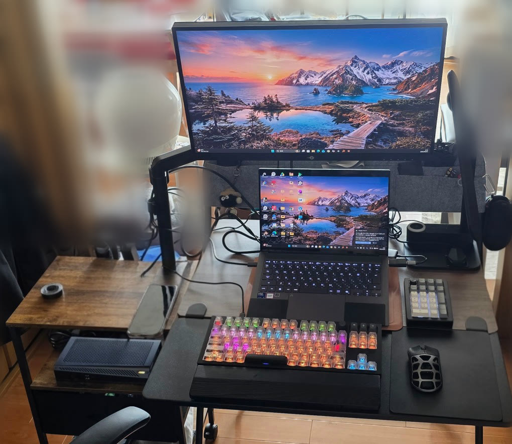

自组电脑
使用RTX 5060 Ti，选自组台式机还是外置显卡(eGPU)？
我平时是把外置显卡(eGPU)接在笔记本电脑上使用的。而同样的GeForce RTX 5060 Ti，也可以直接插在台式机上使用。该选哪一种，几乎只取决于一个问题：“你会不会带着电脑出门”。本文将两种配置放在一起比较。
简单来说，如果电脑不离开桌面，就选自组台式机；如果在外用笔记本，回家后又想要更强的性能，就选eGPU。
【广告】 本文包含Amazon联盟计划的推广链接。

配置一览
| 部件 | 产品 | 参考价格(日本) | 购买链接 |
|---|---|---|---|
| 显卡(台式机用) | ASUS Dual GeForce RTX 5060 Ti 16GB GDDR7 OC Edition(DUAL-RTX5060TI-O16G) | 约143,600日元(价格.com) | 在Amazon搜索 |
| 外置显卡(eGPU) | GIGABYTE AORUS RTX 5060 Ti AI BOX(GV-N506TIXEB-16GD) | 约205,000日元(价格.com) | 在Amazon查看 |
| 搭配eGPU的笔记本电脑(本人使用) | ASUS Zenbook(搭载Core Ultra 9 386H) | 约344,800日元(Amazon；2026年10月1日暂时缺货) | 在Amazon查看 |
组装台式机时，除显卡外还需要CPU、主板、内存、SSD、电源和机箱。2026年10月日本的内存和显卡价格偏高，整机费用变化很大，选择部件时请确认最新价格。
※ 价格为2026年10月1日日本的参考价格(价格.com的最低价；价格.com未收录的商品为链接商店的显示价格)。价格和库存每天都在变化，购买前请在各链接确认最新信息。
自组台式机与eGPU的比较
| 比较项目 | 自组台式机+RTX 5060 Ti | 笔记本+eGPU(AORUS RTX 5060 Ti AI BOX) |
|---|---|---|
| 显卡连接方式 | 直接插在主板的PCIe插槽上 | 通过Thunderbolt 5线缆连接 |
| 同一显卡的性能 | 带宽限制少，更容易发挥显卡性能 | 受连接带宽限制，同一显卡的性能可能低于台式机 |
| 便携性 | 无法携带 | 可以只带走笔记本电脑 |
| 占用空间 | 需要放置中塔机箱的空间 | 显卡盒约117×243×45mm(厂商公布值) |
| 连接外设 | 各条线缆分别连接 | 显卡盒兼作扩展坞，一根线即可连接显示器和USB设备 |
| 为笔记本供电 | — | 通过Thunderbolt 5最高100W(厂商公布值) |
| 今后的升级 | 显卡、CPU、内存都可以单独更换 | 升级显卡需要整盒更换 |
| 初期费用(2026年10月1日参考) | 仅显卡约143,600日元(其他部件另计) | 显卡盒约205,000日元(笔记本另计) |
该选哪一种？
适合自组台式机的人
电脑不外带、只在桌上使用的人。显卡直接插在主板上，更容易发挥性能，之后还能单独升级CPU、内存和存储。同样的预算下，台式机通常性价比更高。
适合eGPU的人
在外想轻便地用笔记本，回家后又想处理繁重工作或玩游戏的人。AORUS RTX 5060 Ti AI BOX通过Thunderbolt 5连接，同时还能为笔记本供电(最高100W)、输出到显示器并兼作USB扩展坞，回家后插上一根线就能切换整个工作环境。我的用法请参见用笔记本电脑+eGPU打造省空间的顶级桌面环境。
选购eGPU时的确认要点
能获得多少性能，取决于笔记本是否有Thunderbolt 5(或兼容规格)的接口。购买前请务必确认自己笔记本的接口规格。
降低预算时的替代方案
| 更换部件 | 替代方案 | 注意事项 |
|---|---|---|
| 台式机显卡 | GeForce RTX 5060(8GB) | 显存减半，在高画质下需要降低设置的情况会增多 |
| eGPU | 沿用手头的笔记本电脑 | 如果现有笔记本支持Thunderbolt，只需购买显卡盒 |
提高预算时的替代方案
| 更换部件 | 替代方案 | 目的 |
|---|---|---|
| 台式机显卡 | GeForce RTX 5070 | 想在WQHD下追求高帧率时 |
| eGPU | 搭载更高端显卡的eGPU盒 | 带宽限制依然存在，显卡越高端差距越容易显现，需要事先了解 |
组装与维护的注意事项
- 插拔显卡或eGPU的线缆时，一定要先关闭电源。我曾在通电状态下插上显卡的辅助供电线，结果把硬件弄坏了(当时的文章)。
- 用eGPU玩游戏时，关闭笔记本自带的屏幕、只在外接显示器上显示，可以让系统集中处理游戏。
- eGPU盒内部也有风扇，同样会积灰。和台式机一样，要定期清理进风口。
关于部件搭配的思路和长期使用的保养方法，我在Kindle书中做了详细说明(日文版)。
- 《电脑黄金配置比自组指南＆神级配件优化圣经》(2026年最新版)(Kindle)／查看书籍内容
- 《让配件寿命翻倍：自组电脑维护与故障排查完全指南》(Kindle)／查看书籍内容
【关于推广链接】 本文的商品链接包含Amazon联盟计划及乐天联盟计划的推广链接。如通过链接购买商品，本站可能会获得推广费用。价格和库存会变动，购买前请在各链接确认最新信息。